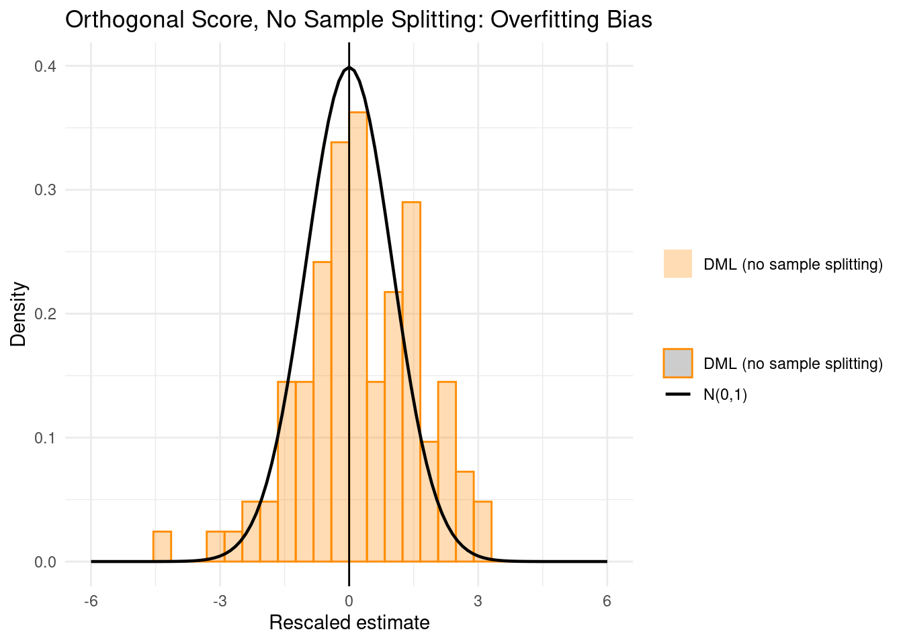
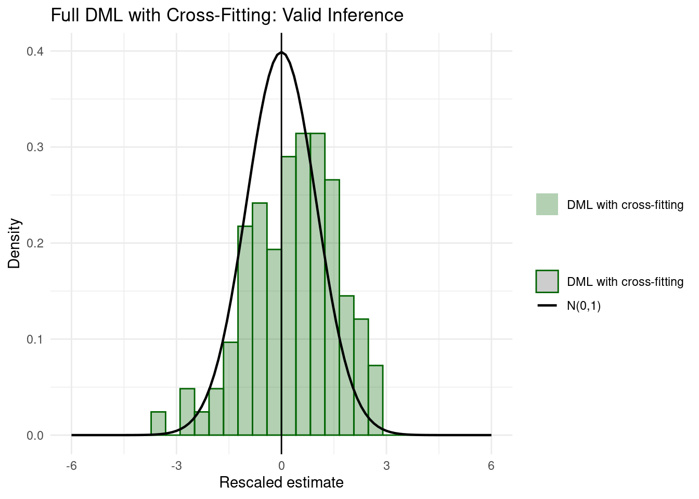
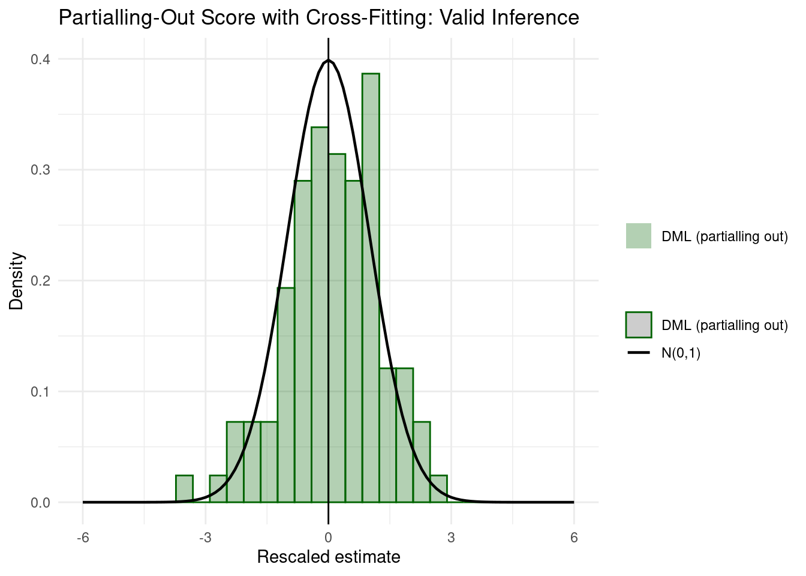
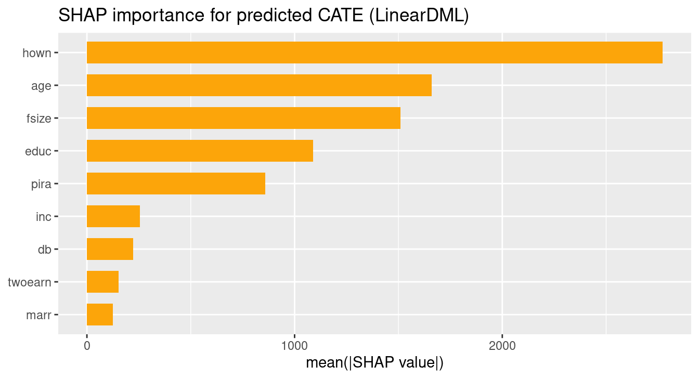
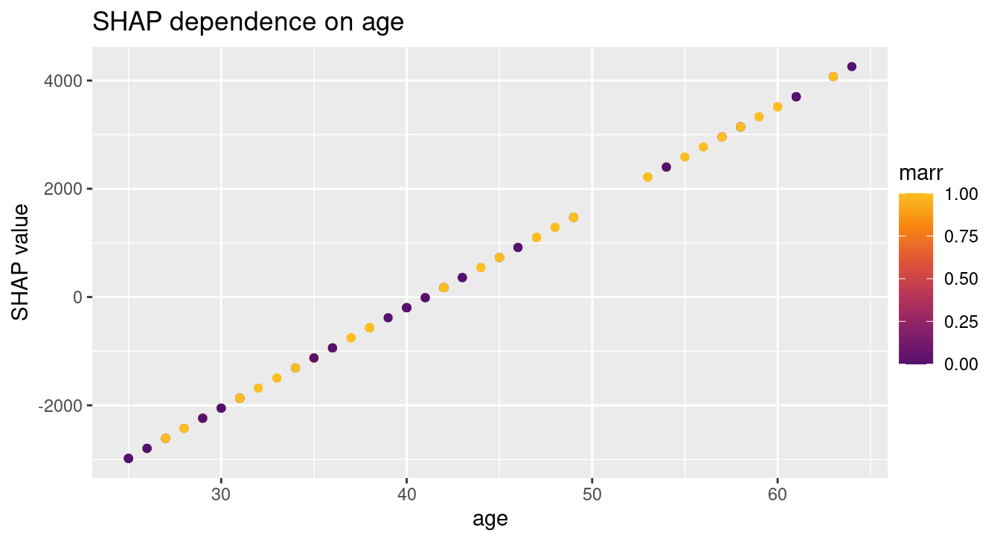

Code
packages <- c(
"DoubleML",
"mlr3",
"mlr3learners",
"data.table",
"tidyverse",
"lgr",
"ranger",
"glmnet",
"RCausalML",
"kernelshap",
"shapviz",
"future",
"foreach"
)
Double/debiased machine learning (DML) provides valid causal inference when flexible ML methods are used to control for high-dimensional confounding. Standard ML estimators are ill-suited to causal questions: regularization shrinks coefficients toward zero (introducing bias in \(\hat{\theta}\)), and fitting nuisance functions on the same data used for causal estimation causes overfitting bias. DML corrects both problems by combining Neyman-orthogonal scores, sample splitting, and cross-fitting, yielding \(\sqrt{n}\)-consistent, asymptotically normal estimates of causal parameters.
This notebook is organized in two parts:
doubleml_plr(), holdout validation of nuisance predictions, and SHAP-based interpretation of heterogeneous treatment effects using explain_cate() with parallel permutation SHAP via future.ML models predict well but produce biased causal estimates because regularization (e.g., Lasso shrinkage) distorts the coefficients we care about. The table below summarizes the three challenges DML addresses and how it addresses each one.
| Challenge | Why it matters | DML’s response |
|---|---|---|
| Regularization bias | ML shrinks nuisance coefficients, which contaminates \(\hat{\theta}\) | Neyman-orthogonal scores (partialling-out or IV-type) make \(\hat{\theta}\) insensitive to first-order nuisance errors |
| Overfitting bias | Using the same data for ML nuisances and for estimating \(\theta\) inflates apparent fit | Sample splitting: train nuisances on one fold, estimate \(\theta\) on another |
| High-dimensional confounders | Classical OLS breaks down when \(p \gg n\) or relationships are non-linear |
mlr3 learners (e.g., ranger, glmnet) handle flexible, high-dimensional \(g_0(X)\) and \(m_0(X)\)
|
Cross-fitting combines both halves of the sample split by rotating roles across \(K\) folds, so no observations are wasted.
Both parts of this notebook use the partially linear regression (PLR) model, which separates the linear treatment effect \(\theta_0\) from the nonparametric confounding functions \(g_0\) and \(m_0\):
\[Y = D\,\theta_0 + g_0(X) + \zeta, \quad \mathbb{E}(\zeta \mid D, X) = 0\]
\[D = m_0(X) + V, \quad \mathbb{E}(V \mid X) = 0\]
| Symbol | Role |
|---|---|
| \(Y\) | Outcome variable |
| \(D\) | Treatment variable |
| \(X\) | High-dimensional confounders |
| \(\theta_0\) | Causal parameter (ATE) |
| \(g_0(X),\, m_0(X)\) | Nuisance functions estimated by ML |
| \(\zeta,\, V\) | Stochastic errors |
Throughout this notebook we use doubleml_plr() from RCausalML (R/DMLearner.R), a thin wrapper around DoubleML’s DoubleMLPLR. It accepts a covariate matrix X, treatment vector d, and outcome vector y, and forwards score, n_folds, and apply_cross_fitting directly to the underlying PLR implementation. Data simulation and the 401(k) dataset are loaded from the DoubleML package (make_plr_CCDDHNR2018, fetch_401k); all mlr3 learners are used unchanged.
Following R packages are required to run this notebook. If any of these packages are not installed, you can install them using the code below:
DoubleML, mlr3, mlr3learners, data.table, tidyverse, lgr, ranger, glmnet, RCausalML, kernelshap, shapviz, future, foreach
packages <- c(
"DoubleML",
"mlr3",
"mlr3learners",
"data.table",
"tidyverse",
"lgr",
"ranger",
"glmnet",
"RCausalML",
"kernelshap",
"shapviz",
"future",
"foreach"
)# Install missing packages
# new_packages <- packages[!(packages %in% installed.packages()[, "Package"])]
# if (length(new_packages)) install.packages(new_packages)# Verify installation
cat("Installed packages:\n")Installed packages: DoubleML mlr3 mlr3learners data.table tidyverse lgr
TRUE TRUE TRUE TRUE TRUE TRUE
ranger glmnet RCausalML kernelshap shapviz future
TRUE TRUE TRUE TRUE TRUE TRUE
foreach
TRUE # Load packages with suppressed messages
invisible(lapply(packages, function(pkg) {
suppressPackageStartupMessages(library(pkg, character.only = TRUE))
}))# Check loaded packages
cat("Successfully loaded packages:\n")Successfully loaded packages: [1] "package:foreach" "package:future" "package:shapviz"
[4] "package:kernelshap" "package:RCausalML" "package:glmnet"
[7] "package:Matrix" "package:ranger" "package:lgr"
[10] "package:lubridate" "package:forcats" "package:stringr"
[13] "package:dplyr" "package:purrr" "package:readr"
[16] "package:tidyr" "package:tibble" "package:ggplot2"
[19] "package:tidyverse" "package:data.table" "package:mlr3learners"
[22] "package:mlr3" "package:DoubleML" "package:stats"
[25] "package:graphics" "package:grDevices" "package:utils"
[28] "package:datasets" "package:methods" "package:base" Part A uses Monte Carlo simulation to make the bias problems visible. We run 100 replications of the partially linear model from Chernozhukov et al. (2018) and compare the distribution of the rescaled estimator \((\hat{\theta} - \theta_0) / \hat{\text{se}}\) against \(\mathcal{N}(0,1)\) under three approaches. A valid estimator produces a histogram that matches the standard normal; deviations expose regularization or overfitting bias.
The data-generating process is:
\[y_i = \theta_0\, d_i + g_0(x_i) + \zeta_i, \quad \zeta_i \sim \mathcal{N}(0,1)\]
\[d_i = m_0(x_i) + v_i, \quad v_i \sim \mathcal{N}(0,1)\]
Covariates \(x_i \sim \mathcal{N}(0, \Sigma)\) with \(\Sigma_{kj} = 0.7^{|j-k|}\). The true causal parameter is \(\theta_0 = 0.5\). Nuisance functions:
\[m_0(x_i) = x_{i,1} + \frac{1}{4}\frac{\exp(x_{i,3})}{1 + \exp(x_{i,3})}\]
\[g_0(x_i) = \frac{\exp(x_{i,1})}{1 + \exp(x_{i,1})} + \frac{1}{4}x_{i,3}\]
The true causal parameter is \(\theta_0 = 0.5\). Each replication draws \(n = 500\) observations with \(p = 5\) covariates.
The helper below extracts the covariate matrix from a PLR data frame by dropping the outcome y and treatment d columns.
set.seed(1234)
n_rep <- 100 # replications (set to 1000 for full replication)
n_obs <- 500
n_vars <- 5
alpha <- 0.5 # true theta_0
data_sim <- vector("list", n_rep)
for (i_rep in seq_len(n_rep)) {
data_sim[[i_rep]] <- make_plr_CCDDHNR2018(
alpha = alpha,
n_obs = n_obs,
dim_x = n_vars,
return_type = "data.frame"
)
}
head(data_sim[[1]])A naive estimator splits the sample in two, fits \(\hat{g}_0(X)\) with ML on one half, then uses the other half to compute:
\[\hat{\theta}_0 = \Bigl(\tfrac{1}{n}\sum_{i \in I} D_i^2\Bigr)^{-1} \tfrac{1}{n}\sum_{i \in I} D_i\bigl(Y_i - \hat{g}_0(X_i)\bigr)\]
This uses a non-orthogonal score. Regularization bias from estimating \(g_0\) with ML does not vanish; \(\sqrt{n}(\hat{\theta}_0 - \theta_0)\) does not stay bounded.
The score below uses only \(\hat{g}(X)\) to residualize \(Y\), ignoring \(D\)’s dependence on \(X\). The moment condition is therefore not orthogonal.
non_orth_score <- function(y, d, l_hat, m_hat, g_hat, smpls) {
u_hat <- y - g_hat
psi_a <- -1 * d * d
psi_b <- d * u_hat
list(psi_a = psi_a, psi_b = psi_b)
}set.seed(1111)
theta_nonorth <- rep(NA, n_rep)
se_nonorth <- rep(NA, n_rep)
for (i_rep in seq_len(n_rep)) {
df <- data_sim[[i_rep]]
r <- doubleml_plr(
plr_x_matrix(df), df$d, df$y,
ml_l = ml_l$clone(),
ml_m = ml_m$clone(),
ml_g = ml_g$clone(),
n_folds = 2L,
score = non_orth_score,
apply_cross_fitting = FALSE
)
theta_nonorth[i_rep] <- r$ate
se_nonorth[i_rep] <- r$ate_se
}Under valid inference, \((\hat{\theta} - \theta_0) / \hat{\text{se}}\) should follow \(\mathcal{N}(0,1)\). For the naive estimator it does not: the histogram is shifted and spread, directly revealing regularization bias from the random forest’s shrinkage of \(g_0(X)\).
t_nonorth <- (theta_nonorth - alpha) / se_nonorth
ggplot(data.frame(t = t_nonorth)) +
geom_histogram(
aes(x = t, y = after_stat(density),
colour = "Non-orthogonal ML", fill = "Non-orthogonal ML"),
bins = 30, alpha = 0.3
) +
geom_vline(xintercept = 0, col = "black") +
stat_function(fun = dnorm, aes(colour = "N(0,1)"), linewidth = 0.8) +
scale_colour_manual(
name = "",
values = c("Non-orthogonal ML" = "darkblue", "N(0,1)" = "black")
) +
scale_fill_manual(
name = "",
values = c("Non-orthogonal ML" = "darkblue", "N(0,1)" = NA)
) +
xlim(-6, 6) + xlab("Rescaled estimate") + ylab("Density") +
ggtitle("Naive ML: Regularization Bias") +
theme_minimal()
Orthogonalization removes the leading regularization bias by partialling \(X\) out of \(D\) as well. Let \(\hat{V} = D - \hat{m}(X)\) and use the IV-type score:
\[\check{\theta}_0 = \Bigl(\tfrac{1}{n}\sum_{i \in I} \hat{V}_i D_i\Bigr)^{-1} \tfrac{1}{n}\sum_{i \in I} \hat{V}_i\bigl(Y_i - \hat{g}_0(X_i)\bigr)\]
With n_folds = 1 and apply_cross_fitting = FALSE, nuisances and the final estimate are computed on the same data, so overfitting bias is not eliminated by sample splitting alone.
set.seed(2222)
theta_orth_nosplit <- rep(NA, n_rep)
se_orth_nosplit <- rep(NA, n_rep)
for (i_rep in seq_len(n_rep)) {
df <- data_sim[[i_rep]]
r <- doubleml_plr(
plr_x_matrix(df), df$d, df$y,
ml_l = ml_l$clone(),
ml_m = ml_m$clone(),
ml_g = ml_g$clone(),
n_folds = 1L,
score = "IV-type",
apply_cross_fitting = FALSE
)
theta_orth_nosplit[i_rep] <- r$ate
se_orth_nosplit[i_rep] <- r$ate_se
}t_orth_nosplit <- (theta_orth_nosplit - alpha) / se_orth_nosplit
t_orth_nosplit_plot <- t_orth_nosplit[is.finite(t_orth_nosplit)]
ggplot(data.frame(t = t_orth_nosplit_plot)) +
geom_histogram(
aes(x = t, y = after_stat(density),
colour = "DML (no sample splitting)", fill = "DML (no sample splitting)"),
bins = 30, alpha = 0.3
) +
geom_vline(xintercept = 0, col = "black") +
stat_function(fun = dnorm, aes(colour = "N(0,1)"), linewidth = 0.8) +
scale_colour_manual(
name = "",
values = c("DML (no sample splitting)" = "darkorange", "N(0,1)" = "black")
) +
scale_fill_manual(
name = "",
values = c("DML (no sample splitting)" = "darkorange", "N(0,1)" = NA)
) +
xlim(-6, 6) + xlab("Rescaled estimate") + ylab("Density") +
ggtitle("Orthogonal Score, No Sample Splitting: Overfitting Bias") +
theme_minimal()
Even with an orthogonal score, omitting sample splitting allows overfitting bias to persist. Extreme or non-finite t-values (filtered above) are a characteristic symptom.
Cross-fitting completes the fix. With n_folds = 2, nuisances are trained on one fold and \(\theta\) estimated on the held-out fold; the roles are then swapped and the estimates averaged. This eliminates both regularization bias (orthogonal score) and overfitting bias (sample splitting) while using all observations.
set.seed(3333)
theta_dml <- rep(NA, n_rep)
se_dml <- rep(NA, n_rep)
for (i_rep in seq_len(n_rep)) {
df <- data_sim[[i_rep]]
r <- doubleml_plr(
plr_x_matrix(df), df$d, df$y,
ml_l = ml_l$clone(),
ml_m = ml_m$clone(),
ml_g = ml_g$clone(),
n_folds = 2L,
score = "IV-type",
apply_cross_fitting = TRUE
)
theta_dml[i_rep] <- r$ate
se_dml[i_rep] <- r$ate_se
}t_dml <- (theta_dml - alpha) / se_dml
ggplot(data.frame(t = t_dml)) +
geom_histogram(
aes(x = t, y = after_stat(density),
colour = "DML with cross-fitting", fill = "DML with cross-fitting"),
bins = 30, alpha = 0.3
) +
geom_vline(xintercept = 0, col = "black") +
stat_function(fun = dnorm, aes(colour = "N(0,1)"), linewidth = 0.8) +
scale_colour_manual(
name = "",
values = c("DML with cross-fitting" = "darkgreen", "N(0,1)" = "black")
) +
scale_fill_manual(
name = "",
values = c("DML with cross-fitting" = "darkgreen", "N(0,1)" = NA)
) +
xlim(-6, 6) + xlab("Rescaled estimate") + ylab("Density") +
ggtitle("Full DML with Cross-Fitting: Valid Inference") +
theme_minimal()
The rescaled estimates now align closely with \(\mathcal{N}(0,1)\), confirming that combining an orthogonal score with cross-fitting restores valid inference.
df_compare <- data.frame(
t_nonorth = (theta_nonorth - alpha) / se_nonorth,
t_orth_nosplit = (theta_orth_nosplit - alpha) / se_orth_nosplit,
t_dml = (theta_dml - alpha) / se_dml
)
ggplot() +
geom_histogram(
data = df_compare,
aes(x = t_nonorth, y = after_stat(density),
colour = "Non-orthogonal ML", fill = "Non-orthogonal ML"),
bins = 30, alpha = 0.3
) +
geom_histogram(
data = df_compare,
aes(x = t_orth_nosplit, y = after_stat(density),
colour = "DML (no sample splitting)", fill = "DML (no sample splitting)"),
bins = 30, alpha = 0.3
) +
geom_histogram(
data = df_compare,
aes(x = t_dml, y = after_stat(density),
colour = "DML with cross-fitting", fill = "DML with cross-fitting"),
bins = 30, alpha = 0.3
) +
geom_vline(xintercept = 0, col = "black") +
stat_function(fun = dnorm, aes(colour = "N(0,1)"), linewidth = 0.8) +
scale_colour_manual(
name = "",
values = c(
"Non-orthogonal ML" = "darkblue",
"DML (no sample splitting)" = "darkorange",
"DML with cross-fitting" = "darkgreen",
"N(0,1)" = "black"
)
) +
scale_fill_manual(
name = "",
values = c(
"Non-orthogonal ML" = "darkblue",
"DML (no sample splitting)" = "darkorange",
"DML with cross-fitting" = "darkgreen",
"N(0,1)" = NA
)
) +
xlim(-6, 6) + xlab("Rescaled estimate") + ylab("Density") +
ggtitle("Comparison of All Three Approaches") +
theme_minimal()
The three histograms make the progression concrete: naive ML (blue) is shifted and spread; orthogonal without splitting (orange) is better but still distorted; only full DML with cross-fitting (green) aligns with \(\mathcal{N}(0,1)\).
The partialling-out score is the most common choice in practice. It uses \(\ell_0(X) = \mathbb{E}[Y|X]\) and \(m_0(X) = \mathbb{E}[D|X]\) directly; no separate \(g_0\) learner is required. The orthogonal moment condition is:
\[\psi(W;\,\theta,\eta) := \bigl[Y - \ell(X) - \theta(D - m(X))\bigr](D - m(X))\]
We repeat the no-splitting vs cross-fitting comparison under this score to confirm that the result holds independently of which orthogonal score is used.
set.seed(4444)
theta_po_nosplit <- rep(NA, n_rep)
se_po_nosplit <- rep(NA, n_rep)
for (i_rep in seq_len(n_rep)) {
df <- data_sim[[i_rep]]
r <- doubleml_plr(
plr_x_matrix(df), df$d, df$y,
ml_l = ml_l$clone(),
ml_m = ml_m$clone(),
n_folds = 1L,
score = "partialling out",
apply_cross_fitting = FALSE
)
theta_po_nosplit[i_rep] <- r$ate
se_po_nosplit[i_rep] <- r$ate_se
}set.seed(5555)
theta_dml_po <- rep(NA, n_rep)
se_dml_po <- rep(NA, n_rep)
for (i_rep in seq_len(n_rep)) {
df <- data_sim[[i_rep]]
r <- doubleml_plr(
plr_x_matrix(df), df$d, df$y,
ml_l = ml_l$clone(),
ml_m = ml_m$clone(),
n_folds = 2L,
score = "partialling out",
apply_cross_fitting = TRUE
)
theta_dml_po[i_rep] <- r$ate
se_dml_po[i_rep] <- r$ate_se
}t_dml_po <- (theta_dml_po - alpha) / se_dml_po
ggplot(data.frame(t = t_dml_po)) +
geom_histogram(
aes(x = t, y = after_stat(density),
colour = "DML (partialling out)", fill = "DML (partialling out)"),
bins = 30, alpha = 0.3
) +
geom_vline(xintercept = 0, col = "black") +
stat_function(fun = dnorm, aes(colour = "N(0,1)"), linewidth = 0.8) +
scale_colour_manual(
name = "",
values = c("DML (partialling out)" = "darkgreen", "N(0,1)" = "black")
) +
scale_fill_manual(
name = "",
values = c("DML (partialling out)" = "darkgreen", "N(0,1)" = NA)
) +
xlim(-6, 6) + xlab("Rescaled estimate") + ylab("Density") +
ggtitle("Partialling-Out Score with Cross-Fitting: Valid Inference") +
theme_minimal()
df_scores <- data.frame(
t_ivtype = (theta_dml - alpha) / se_dml,
t_partout = (theta_dml_po - alpha) / se_dml_po
)
ggplot() +
geom_histogram(
data = df_scores,
aes(x = t_ivtype, y = after_stat(density),
colour = "DML — IV-type", fill = "DML — IV-type"),
bins = 30, alpha = 0.3
) +
geom_histogram(
data = df_scores,
aes(x = t_partout, y = after_stat(density),
colour = "DML — partialling out", fill = "DML — partialling out"),
bins = 30, alpha = 0.3
) +
geom_vline(xintercept = 0, col = "black") +
stat_function(fun = dnorm, aes(colour = "N(0,1)"), linewidth = 0.8) +
scale_colour_manual(
name = "",
values = c(
"DML — IV-type" = "darkgreen",
"DML — partialling out" = "steelblue",
"N(0,1)" = "black"
)
) +
scale_fill_manual(
name = "",
values = c(
"DML — IV-type" = "darkgreen",
"DML — partialling out" = "steelblue",
"N(0,1)" = NA
)
) +
xlim(-6, 6) + xlab("Rescaled estimate") + ylab("Density") +
ggtitle("IV-Type vs Partialling-Out Score (both with cross-fitting)") +
theme_minimal()
Both scores achieve approximately valid inference when combined with cross-fitting. The two distributions are nearly indistinguishable in practice, which supports using whichever score is computationally simpler for a given problem.
summary_sim <- data.frame(
Approach = c(
"Non-orthogonal ML",
"IV-type, no sample splitting",
"IV-type with cross-fitting",
"Partialling-out, no sample splitting",
"Partialling-out with cross-fitting"
),
Mean_theta = round(c(
mean(theta_nonorth, na.rm = TRUE),
mean(theta_orth_nosplit, na.rm = TRUE),
mean(theta_dml, na.rm = TRUE),
mean(theta_po_nosplit, na.rm = TRUE),
mean(theta_dml_po, na.rm = TRUE)
), 4),
SD_theta = round(c(
sd(theta_nonorth, na.rm = TRUE),
sd(theta_orth_nosplit, na.rm = TRUE),
sd(theta_dml, na.rm = TRUE),
sd(theta_po_nosplit, na.rm = TRUE),
sd(theta_dml_po, na.rm = TRUE)
), 4),
Bias = round(c(
mean(theta_nonorth, na.rm = TRUE) - alpha,
mean(theta_orth_nosplit, na.rm = TRUE) - alpha,
mean(theta_dml, na.rm = TRUE) - alpha,
mean(theta_po_nosplit, na.rm = TRUE) - alpha,
mean(theta_dml_po, na.rm = TRUE) - alpha
), 4)
)
knitr::kable(
summary_sim,
caption = paste0("Simulation results across ", n_rep,
" replications (true theta_0 = ", alpha, ")"),
col.names = c("Approach", "Mean estimate", "SD", "Bias")
)| Approach | Mean estimate | SD | Bias |
|---|---|---|---|
| Non-orthogonal ML | 0.5274 | 0.0735 | 0.0274 |
| IV-type, no sample splitting | 0.5095 | 0.0486 | 0.0095 |
| IV-type with cross-fitting | 0.5138 | 0.0535 | 0.0138 |
| Partialling-out, no sample splitting | 0.5066 | 0.0491 | 0.0066 |
| Partialling-out with cross-fitting | 0.5049 | 0.0512 | 0.0049 |
Part B applies DML to the 401(k) dataset (Chernozhukov et al., 2020) to estimate the average causal effect of employer-sponsored 401(k) eligibility (e401) on net total financial assets (net_tfa), controlling for age, income, education, family structure, and other background variables.
The workflow has four stages: (1) an 80/20 stratified train–test split; (2) causal estimation via doubleml_plr() on the training fold; (3) out-of-sample validation of the nuisance models on the held-out test fold; and (4) SHAP interpretation of treatment effect heterogeneity using LinearDML and explain_cate(). Note that formal PLR inference (summary, confint) applies only to the training sample where doubleml_plr() is fit; the test fold is used exclusively for predictive sanity-checking of the nuisance regressions.
df_401k <- fetch_401k(return_type = "data.frame", instrument = FALSE)
# Variables:
# net_tfa : net total financial assets (outcome Y)
# e401 : = 1 if employer offers 401(k) (treatment D)
# age, inc, fsize, educ, db, marr, twoearn, pira, hown : covariates (X)
cat("Dimensions:", nrow(df_401k), "x", ncol(df_401k), "\n")Dimensions: 9915 x 11 head(df_401k)The split is stratified on e401 (80% train / 20% test) so both folds retain similar treatment prevalence. Stratification prevents imbalance that could artificially improve or degrade nuisance model performance on the test fold.
x_cols_401k <- c("age", "inc", "fsize", "educ", "db", "marr", "twoearn", "pira", "hown")
X_401k <- as.matrix(df_401k[, x_cols_401k, drop = FALSE])
y_401k <- df_401k$net_tfa
t_401k <- df_401k$e401
set.seed(3141)
train_frac <- 0.8
i1 <- which(t_401k == 1L)
i0 <- which(t_401k == 0L)
n1_tr <- max(1L, floor(train_frac * length(i1)))
n0_tr <- max(1L, floor(train_frac * length(i0)))
train_idx <- c(sample(i1, n1_tr), sample(i0, n0_tr))
test_idx <- setdiff(seq_along(t_401k), train_idx)
X_tr <- X_401k[train_idx, , drop = FALSE]
X_te <- X_401k[test_idx, , drop = FALSE]
y_tr <- y_401k[train_idx]
y_te <- y_401k[test_idx]
t_tr <- t_401k[train_idx]
t_te <- t_401k[test_idx]
cat(
"Train n =", length(train_idx), "| Test n =", length(test_idx),
"| mean(e401) train =", round(mean(t_tr), 3),
"test =", round(mean(t_te), 3), "\n"
)Train n = 7931 | Test n = 1984 | mean(e401) train = 0.371 test = 0.371 Both nuisance models use random forest via ranger (500 trees, max depth 5, min node size 2). Random forests are well-suited here: the 401(k) dataset is moderate-dimensional with likely non-linear covariate effects, and ranger is fast enough for 5-fold cross-fitting on this sample size.
learner_rf <- lrn("regr.ranger", num.trees = 500, max.depth = 5, min.node.size = 2)
ml_l_401k <- learner_rf$clone()
ml_m_401k <- learner_rf$clone()We fit the PLR with the partialling-out score and 5-fold cross-fitting on the training data (X_tr, t_tr, y_tr). Setting return_ml_object = TRUE retains the underlying DoubleMLPLR object so we can call summary() and confint() directly on it.
================= DoubleMLPLR Object ==================
------------------ Data summary ------------------
Outcome variable: y
Treatment variable(s): d
Covariates: age, inc, fsize, educ, db, marr, twoearn, pira, hown
Instrument(s):
Selection variable:
No. Observations: 7931
------------------ Score & algorithm ------------------
Score function: partialling out
DML algorithm: dml2
------------------ Machine learner ------------------
ml_l: regr.ranger
ml_m: regr.ranger
------------------ Resampling ------------------
No. folds: 5
No. repeated sample splits: 1
Apply cross-fitting: TRUE
------------------ Fit summary ------------------
Estimates and significance testing of the effect of target variables
Estimate. Std. Error t value Pr(>|t|)
d 8046 1563 5.148 2.63e-07 ***
---
Signif. codes: 0 '***' 0.001 '**' 0.01 '*' 0.05 '.' 0.1 ' ' 1cat("Effect of 401(k) eligibility on net financial assets (training fit):\n")Effect of 401(k) eligibility on net financial assets (training fit):obj_dml_401k$summaryfunction (digits = max(3L, getOption("digits") - 3L))
{
if (all(is.na(self$coef))) {
message("fit() not yet called.")
}
else {
k = length(self$coef)
table = matrix(NA_real_, ncol = 4, nrow = k)
rownames(table) = names(self$coef)
colnames(table) = c("Estimate.", "Std. Error", "t value",
"Pr(>|t|)")
table[, 1] = self$coef
table[, 2] = self$se
table[, 3] = self$t_stat
table[, 4] = self$pval
private$summary_table = table
if (length(k)) {
cat("Estimates and significance testing of the",
"effect of target variables\n")
res = as.matrix(printCoefmat(private$summary_table,
digits = digits, P.values = TRUE, has.Pvalue = TRUE))
cat("\n")
}
else {
cat("No coefficients\n")
}
cat("\n")
invisible(res)
}
}
<environment: 0x5b7cbf7b36d0>cat("95% confidence interval (training sample):\n")95% confidence interval (training sample):obj_dml_401k$confint(level = 0.95) 2.5 % 97.5 %
d 4982.467 11108.49coef_val <- obj_dml_401k$coef
ci <- obj_dml_401k$confint(level = 0.95)
ci_lo <- ci[1, 1]
ci_hi <- ci[1, 2]
df_result <- data.frame(
label = "e401 → net_tfa (train)",
estimate = coef_val,
ci_lo = ci_lo,
ci_hi = ci_hi
)
ggplot(df_result, aes(x = label, y = estimate)) +
geom_point(size = 4, colour = "darkgreen") +
geom_errorbar(aes(ymin = ci_lo, ymax = ci_hi), width = 0.15,
colour = "darkgreen", linewidth = 1) +
geom_hline(yintercept = 0, linetype = "dashed", colour = "grey50") +
xlab("") +
ylab("Estimated effect (USD)") +
ggtitle(
"DML Estimate: Effect of 401(k) Eligibility on Net Financial Assets",
subtitle = "Training sample; partialling-out, 5-fold CF, RF nuisances"
) +
theme_minimal()
The estimated coefficient on e401 is the PLR average treatment effect for the training subsample, under the standard PLR assumptions (unconfoundedness, overlap, correct specification of \(g_0\) and \(m_0\) up to the ML approximation). A positive and statistically significant estimate is consistent with 401(k) eligibility raising net financial assets, in line with the findings in Chernozhukov et al. (2020).
To check that the nuisance models generalize beyond the training fold, we refit random forests on training data only and evaluate them on the held-out test set. We report RMSE for the outcome regression \(\hat{g}(X) \approx \mathbb{E}[Y|X]\) and the Brier score for the treatment propensity \(\hat{m}(X) \approx \mathbb{E}[D|X]\). Lower values indicate better out-of-sample nuisance fit. This is a predictive sanity check — it does not replace PLR assumption verification, but a severely poor fit would signal that the nuisance models are misspecified or underfit.
df_tr <- cbind(as.data.frame(X_tr), net_tfa = y_tr, e401 = t_tr)
df_te <- cbind(as.data.frame(X_te), net_tfa = y_te, e401 = t_te)
rf_y <- ranger::ranger(
net_tfa ~ .,
data = df_tr[, c(x_cols_401k, "net_tfa")],
num.trees = 500L,
max.depth = 5L,
min.node.size = 2L
)
rf_d <- ranger::ranger(
as.factor(e401) ~ .,
data = df_tr[, c(x_cols_401k, "e401")],
probability = TRUE,
num.trees = 500L,
max.depth = 5L,
min.node.size = 2L
)
y_hat <- predict(rf_y, df_te)$predictions
p_hat <- predict(rf_d, df_te)$predictions[, 2L]
rmse_y <- sqrt(mean((y_te - y_hat)^2))
brier_d <- mean((t_te - p_hat)^2)
validation_tbl <- data.frame(
Metric = c("RMSE of Y (net_tfa)", "Brier score for D (e401)"),
Value = round(c(rmse_y, brier_d), 2)
)
knitr::kable(
validation_tbl,
caption = "Test-set metrics for RF nuisances trained on the training fold only"
)| Metric | Value |
|---|---|
| RMSE of Y (net_tfa) | 53026.84 |
| Brier score for D (e401) | 0.20 |
DoubleMLPLR estimates a single scalar \(\hat{\theta}\), which is not a function of \(X\) and therefore cannot be explained by SHAP. To explore which covariates drive heterogeneity in the estimated treatment effect, we instead fit LinearDML on the training fold (ranger first-stage nuisances, OLS on the residual-on-residual design — see R/DMLearner.R). This produces a CATE prediction \(\hat{\tau}(X)\) that varies with \(X\), which we then explain using permutation SHAP via explain_cate(). SHAP values are computed on up to 120 test rows for speed, with the full training set as background data. Worker parallelism is handled by future::plan(multisession).
set.seed(3143)
ldml_401k <- LinearDML(
model_y = "ranger",
model_t = "ranger",
n_fold = 5L,
seed = 3143
)
ldml_401k <- fit(ldml_401k, X_tr, t_tr, y_tr)
n_explain <- min(120L, nrow(X_te))
X_explain <- as.data.frame(X_te[seq_len(n_explain), , drop = FALSE])
colnames(X_explain) <- x_cols_401k
bg_X_df <- as.data.frame(X_tr)
colnames(bg_X_df) <- x_cols_401k
n_workers <- min(4L, max(1L, future::availableCores() - 1L))
# Fitted ranger objects exceed future's default 500 MiB export cap for workers
fg_prev <- getOption("future.globals.maxSize", default = 500 * 1024^2)
options(future.globals.maxSize = max(2 * 1024^3, fg_prev))
future::plan(future::multisession, workers = n_workers)
ks <- tryCatch(
explain_cate(
ldml_401k,
X = X_explain,
bg_X = bg_X_df,
use_permshap = TRUE,
parallel = TRUE,
verbose = FALSE,
parallel_args = list(packages = c("ranger", "RCausalML"))
),
finally = {
future::plan(future::sequential)
options(future.globals.maxSize = fg_prev)
}
)
shp <- shapviz::shapviz(ks)shapviz::sv_importance(shp, max_display = 9L) +
ggplot2::labs(title = "SHAP importance for predicted CATE (LinearDML)")
shapviz::sv_dependence(shp, x_cols_401k[[1L]]) +
ggplot2::labs(title = paste("SHAP dependence on", x_cols_401k[[1L]]))
Reading the plots. SHAP values here are contributions to \(\hat{\tau}(X)\) from LinearDML — a descriptive heterogeneity model, not the same object as the PLR scalar \(\hat{\theta}\) in B.4–B.5. Use them to explore which covariates are associated with larger or smaller estimated treatment effects under this specification, not to draw hard causal conclusions about effect modifiers.
future::plan(future::sequential)| Step | Lesson |
|---|---|
| Naive ML | Non-orthogonal score + ML → regularization bias, invalid inference |
| Orthogonalization | IV-type or partialling-out score removes leading bias |
| No sample splitting | Same data for ML and \(\hat{\theta}\) → overfitting bias |
| Cross-fitting | Sample splitting + cross-fitting → valid \(\sqrt{n}\)-consistent estimates |
| Real data | Train–test split, doubleml_plr() on train; validate nuisances on test; SHAP for LinearDML CATE via explain_cate() + future
|
Takeaway. Double ML combines orthogonal scores, sample splitting, and cross-fitting so that flexible ML algorithms can handle high-dimensional confounders without biasing the final causal estimate. The simulation in Part A demonstrates each component’s contribution; Part B shows the method applied end-to-end on observational economic data.
Key References
Documentation
Packages